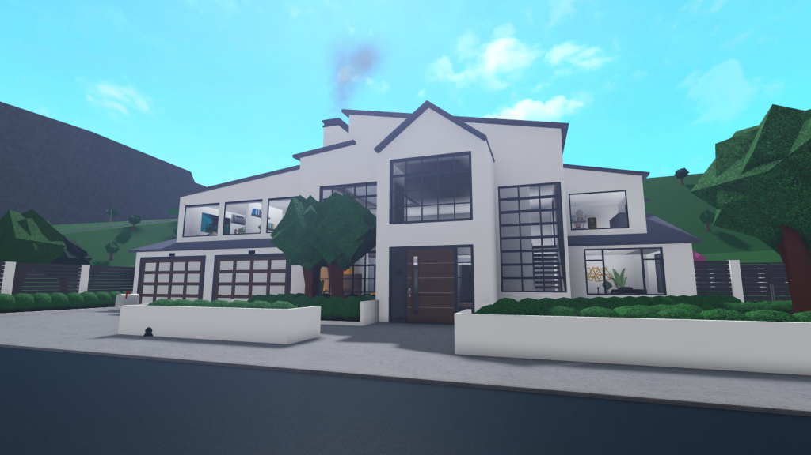

Zovem se Fran Pilija. Učenik sam Tehničke škole Ruđera Boškovića, tehničar za računalstvo. Neki od mojih hobija su arhitektura i izrada animacije.
Mislim da je arhitektura zanimljiva jer pomoću nje mogu eksperimentirati sa stilovima te oživjeti svoju maštu, a isto tako naučim nešto novo poput vrste materijala i koliko bi izvedba nekog projekta bila moguća. Evo primjera jedne od mojih prvih kuća koje sam kreirao:
Kao netko tko voli stvarati priče i likove mislim da je animacija moćan medij za pripovijedanje. Omogućuje stvaranje priča i prenošenje emocija kroz vizualni prikaz, pokret i zvuk. Sposobnost oživljavanja likova i svjetova otvara beskrajne mogućnosti kreativnog izražavanja. Još sam uvijek početnik, ali evo jedan primjer moje animacije: